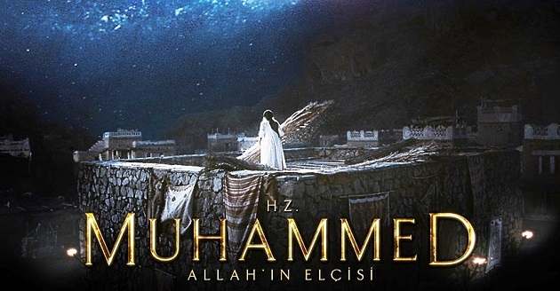

filmin özeti
|  |
Yönetmen Majid MajidiSenarist Majid MajidiOyuncular: Sareh Bayat, Mina Sadati, Mahdi PakdelOrijinal adı Muhammad: The Messenger of GodFilm, 7.yy'da Mekke'de ve Hz.Muhammed'in etrafında gelişen olayları konu ediniyor. Abraha’nın fil ordusuyla Mekke’ye yönelişi sebebiyle tedirgin olan Mekke halkı çaresizdir. Hz. Muhammed’e hamile olan Hz. Amine geri kalan Mekke halkı gibi kaçıp dağlara saklanamaz. Abraha kimseciklerin olmadığı şehri kolayca ele geçirebileceğini düşünür ancak filler Mekke’ye doğru bir adım dahi atmaz. Ardından milyonlarca ebabil kuşu, Abraha’nın ordusunu taş yağmuruna tutarak yok ederler. Bu olaydan tam bir ay sonra Hz. Muhammed doğmuştur. Hz. Âmine’nin kucağındaki minik bebek dünyayı kökünden değiştirecektir... Baran ve Cennetin Çocukları gibi yapımlara imza atarak önemli bir başarıya ulaşan Majid Majidi'nin yönetmen koltuğunda oturduğu yapımda başrolleri Mahdi Pakdel, Sareh Bayat, Mina Sadati ve Ali Reza Shoja-Nuri paylaşıyor. Filmin kadrosunda Mohsen Tanabandeh, Dariush Farhang ve Siamak Adib de yer alıyor. |